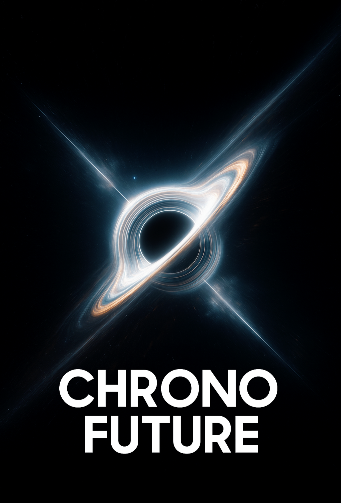

Introducción
(1) El tiempo ha sido el misterio más grande de la humanidad. Desde las primeras civilizaciones hasta los laboratorios modernos, hemos intentado comprenderlo, atraparlo y moldearlo. Chrono Future nace como un puente entre lo imposible y lo inevitable.
(2) Cada segundo es una semilla. Algunos la dejan caer sin cuidado, otros la siembran con intención. Chrono Future enseña que el tiempo no se pierde: se transforma en experiencias, en recuerdos y en realidades que moldean el futuro.
(3) Los agujeros negros son símbolos del infinito y del poder de lo desconocido. En este proyecto, se convierten en metáforas de la mente: espacios donde todo lo que entra parece perderse, pero en realidad se transforma en energía.
(4) La misión de Chrono Future no es solo entender el tiempo, sino **dominarlo mentalmente**. Cuando controlamos nuestros pensamientos, creamos la posibilidad de manifestar un presente distinto y un futuro diseñado.
(5) Ser un Maquinario es ser un conductor del tren del universo. Es tomar las riendas de la propia vida y decidir en qué estación detenerse y a cuál nunca volver.
El Camino del Tiempo
(6) Todo viaje comienza con una pregunta: ¿qué harías si pudieras moldear tu propia línea temporal? Chrono Future no ofrece respuestas fáciles, pero sí el mapa para empezar.
(7) La ciencia nos dice que el tiempo avanza de manera lineal. Pero la mente nos demuestra que podemos viajar al pasado con un recuerdo o al futuro con un sueño. Allí reside la clave.
(8) Los recuerdos son más que imágenes: son llaves que abren puertas invisibles. Cuando se reviven con intensidad, permiten experimentar de nuevo lo vivido, y quizá, alterarlo desde adentro.
(9) Chrono Future propone un sistema donde cada pensamiento cuenta, porque cada pensamiento vibra en una frecuencia que impacta la realidad.
(10) Los audífonos bineuronales, basados en frecuencias Hz, son solo un paso hacia la máquina definitiva: aquella que convierte la memoria en un universo alterno que podemos explorar.
Conclusión Motivadora
(100) Chrono Future no es solo un proyecto tecnológico ni una filosofía del tiempo. Es una invitación a despertar, a tomar el control de tu mente y a comprender que tú eres el verdadero Maquinario de tu vida. El tren del universo sigue avanzando, y ahora tienes en tus manos el poder de elegir hacia dónde.